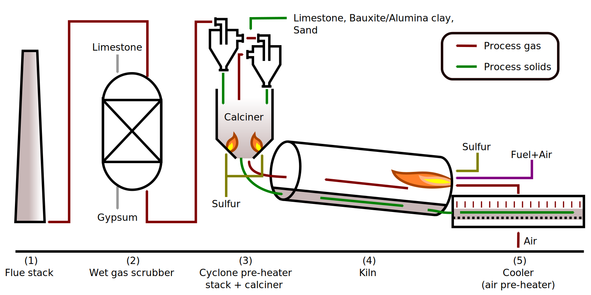

The state of one-dimensional kiln models
September 2022
Marcus N. Campbell Bannerman
m.campbellbannerman@abdn.ac.uk
Process Engineer's View On Cement
Scientists discover the world that exists; engineers create
the world that never was.
T. von Kármán
-
We've being creating a lot of new world recently; 7% of
manmade $\text{CO}_2$ emissions are from cement
production.
Urgent pressure for the cement industry to go-green.
-
In 2016 and 2017, china's total cement sales equaled the USA
over the entire last century (1900-2000).
The scale is so large, any single solution may fail just on raw material availability.
A Process Engineers View
Scientists discover the world that exists; engineers create
the world that never was.
T. von Kármán
- 4.1B tons of cement produced in 2017 $\approx 0.5$ tons per person. The second most ubiquitous product after water.
-
OPC Cement ($\approx 50\to100$ £/ton), is cheaper than
deionised water ($\approx200$ £/ton), but more expensive
than tap water ($\approx1$ £/ton).
No margin for any fancy processing.
No margin for more expensive raw materials, and sand+limestone is very cheap.
Alternative Formulations
- Roughly 75% by weight of typical OPC cement clinker is made up of belite and alite: \begin{align} {\color{orangered}8\,\underset{\text{limestone}}{\text{Ca}\text{C}\text{O}_3}}+3\,\underset{\text{quartz}}{\text{Si}\text{O}_2}+\ldots \underset{\color{darkred}\mathbf{1450^\circ\text{C}}}{\rightleftarrows} \underset{\text{belite}}{\text{Ca}_2\,\text{Si}\text{O}_4} + 2\,\underset{\text{alite}}{\text{Ca}_3\text{Si}\text{O}_5} + \mathbf{\color{darkred}8\,\text{C}\text{O}_2} \ldots \end{align}
- We need alternative clinker chemistry to reduce limestone usage, as this is the source of the chemistry-derived $\text{C}\text{O}_2$.
- We need alternative fuels and lower-temperature reactions to mitigate fuel-derived $\text{C}\text{O}_2$ emissions.
$\text{C}\bar{\text{S}}\text{A}$ cement
One solution, suggested by Prof. Glasser, is to burn sulfur to generate Calcium
SulfoAluminate ($\text{C}\bar{\text{S}}\text{A}$) cements, swapping alite for ye'elimite:
\begin{multline}
\underset{\text{sulfur combustion}}{\mathbf{\color{Apricot}\left(\text{S}+1.5\,\text{O}_2\right)}}+
\underset{\text{limestone}}{\color{orangered}6\,\text{Ca}\text{C}\text{O}_3}
+\underset{\text{quartz}}{\text{Si}\text{O}_2}+3\,\underset{\text{bauxite}}{\text{Al}_2\text{O}_3}+\ldots
\\
\underset{\mathbf{1250^\circ\text{C}}}{\rightleftarrows}
\underset{\text{belite}}{\text{Ca}_2\,\text{Si}\text{O}_4} +
\underset{\text{ye'elimite}}{\text{Ca}_4\text{Al}_6\text{S}\text{O}_{10}} +
\mathbf{\color{darkred}6\,\text{C}\text{O}_2} \ldots
\end{multline}
Lower temperatures (vs $1450^\circ$), less $\text{C}\text{O}_2$ per kg clinker1 due
to lower lime factor, and able to burn
sulfur for process heat!
1Assuming
70%w/w C4A3S, 20%w/w C2S clinker is
mass equivalent to OPC clinker. Very rough assumption.
But, bauxite is relatively expensive due to competition with aluminium
production. We have used lower grade aluminous clays.

How to develop a new process?
£3.3M Green Concrete Project (GCP), funded by GORD in Qatar.
Prof. Glasser et al: Chemistry team

- Atmospheric control tubular furnace.
- Sulfur transfer and phase compatibility of $\text{C}\bar{\text{S}}\text{A}$.
- Gram-scale testing of raw mixes and products.
Myself and (now) Dr T. Hanein: Production team
- Full-scale process design.
- Pilot trials, IBU-tech, Weimar
to produce clinker for product
testing and process verification
(£250k budget!!). - Thermodynamics and heat transfer models.
New(?) process design

Modifications: scrubber and
burners for liquid sulfur.
Challenges: Energy and chemistry now linked due to sulfur burning!
Something in the Air
- Formulations team noticed lab furnace experiments demonstrated irregular results.
- Example: Ternesite ($\text{C}_5\text{S}_2\bar{\text{S}}$) would only form in box furnaces using sacrificial $\text{C}\bar{\text{S}}$ (see right), not in the tubular furnace using 50:50 dry air and $\text{SO}_2,$ or under pure $\text{SO}_2$ atmospheres.
-
Literature says Ternesite stabilized by
atmospheric moisture?
Y. B. Pliego-Cuervo and F. P. Glasser. “Role of sulphates in cement clinkering: the calcium silicosulphate phase”, CCR 8.4 (1978), pp. 455–459.

Our thermodynamics says ternesite has a “goldilocks” zone

- Ternesite is only stable for a range of $\text{S}\text{O}_2$ partial pressures: previous tubular furnace experiments were always either too rich or too lean in $\text{S}\text{O}_2$. T. Hanein, ..., and M.N. Bannerman, “Stability of ternesite and the production at scale of ternesite-based clinkers,” Cement Concrete Res., 98, 91-100 (2017)
- Targeted firings in the “goldilocks” zone formed ternesite at high purity in a single stage.
- Simple mass-balance/Bogue-style equations are dangerous to use for $\text{C}\bar{\text{S}}\text{A}$, as the atmospheric effects are not trivial.
- Similar effects are present for ye'elimite, thus kiln atmospheres are critical in $\text{C}\bar{\text{S}}\text{A}$ synthesis.
- We must use thermodynamics to model new formulations.
- All 23 GCP pilot trial points were designed using thermodynamics and were mostly successful.
-
One of the “challenging” trial
points at a target temperature of $1300^\circ$C
is examined. The target was ye'elimite
using high alumina clay instead of bauxite.
Phase $\text{C}_4\text{A}_3\bar{\text{S}}$ $\text{C}_2\text{S}$ $\text{C}_5\text{S}_2\bar{\text{S}}$ $\text{C}\bar{\text{S}}$ Thermodynamics 33% 55% 0% 0% XRD analysis 34% 44% 14% 3% - Thermodynamics fails to predict the appearance of ternesite. What does thermodynamics miss?
- Although kinetics are a factor (more so at low temperatures), our experience shows understanding the actual rather than targeted processing conditions/temperature is far more important.
- A combined thermodynamics and kiln heat-transfer model has been developed to target these issues.
- Our kiln model is fully predictive: inlet gas temperature from adiabatic flame calculation, solids at room temperature. No fitting.
-
It is difficult to get direct thermal
measurements from production kilns:
- Surface temperatures and exit bed temperature are measured via optical pyrometry (which was also used to control the kiln temperature).
- Internal temperatures via thermocouple wells (fixed to wall, so they rotate in and out of the bed).


Conclusions
- Simple equilibrium thermodynamic models are surprisingly powerful.
- Combined thermal and thermodynamic models are predictive.
- New processes can be designed or old debugged/optimized.
- Lots of interesting future work (e.g., solid solutions, bed models, economics, carbon calculations, plant optimisation).T. Hanein, J. L. Galvez-Martos, and M. N. Bannerman, “Carbon footprint of calcium sulfoaluminate clinker production,” J. Clean. Prod., 172, 2278–2287 (2018)
Acknowledgements
- Thanks to all the members of the GCP team for their input over the years.
- Thank you to the Gulf Organization for Research and Development (GORD), Qatar for their the financial support provided by the through research grant number ENG016RGG11757.
- Thanks to Dr Theodore Hanein in particular who was the driving force behind the work.
- Thank you to IBU-tech and their team for their support during the trials.
Appendix
- (2013-2016) £3.3M Green-Concrete Project (GCP) sponsored by the Gulf Organisation for Research & Development, Qatar. PIs: F. P. Glasser and M. S. Imbabi, (10+ PDRAs, 10+PhDs @ Aberdeen).
- One PhD student (Dr Theodore Hanein), three years (at 10%), and £250k to take a partially-verified lab-scale sulfur-burning $\text{C}\bar{\text{S}}\text{A}$ process through pilot trials and design a full-scale process.
-
We achieved all our goals in 2.5
years, with <£100k spent on 20+ trial
points (>15kg product each, one 100kg
production run), thanks to a few key
aspects:
- Careful atmospherically-controlled tubular furnace experiments testing thermodynamic predictions.
- Extensive predictive thermodynamic modelling of tubular furnace and pilot kilns (incl. atmospheres).
- The database uses the following main sources of information:
- NASA CEA database for combustion/rocketry.
- Holland and Powell (2011) database for petrological mineralogy.
- Around 80 individual sources added by hand.
- Primarily stochiometric phases, but end-member models from Holland and Powell are nearly there.
- Some mineralisation accounted for using entropic effects only (thanks to Duncan Herefort for the idea).
- Melt data is currently incomplete so its disabled.
- The free-energy minimizer uses a unique generating function approach and my own compile-time computer algebra library (Stator), combined with a range of general optimizers (IPOpt, NLOPT/SLSQP) with some modifications (more information on request).


Ye'elemite
- Misprints in compiled data sets. E.g., $\text{C}_3\text{A}$ in Babushkin et al. 1985.
- Unknown sources of incorrect data (which only becomes apparent after detailed inspection). E.g., $\text{C}_4\text{AF}$ in Babushkin et al. 1985.
- Errors in coefficients and/or tabulated data. E.g., NIST(!) C-A-S-H compilation of Haas Jr. et al. 1981.
- Dangerous rounding. E.g., E.g., $C_p=1120\approx 1100$ in Kelley 1960.
- Significant "unknown" revision of data, E.g., rankinite compiled by NIST revised significantly by Hillert et al. 1991.
- Missing or incorrect ye'elimite and ternesite data.
- Much of this is known in the oral history of cement, but why do new people have to keep rediscovering it?
- NASA shares rocket/ICBM calculations, can we?
Thermodynamic solver
- Original C++ equation-oriented solver (using IPOPT). Thermodynamic models are expressed as a free-energy function, \begin{align} G_\alpha\left(T,\, p, \left\{N_i\right\}^N_\alpha\right) & & A_\alpha\left(T,\, V, \left\{N_i\right\}^N_\alpha\right) \end{align}
- An original compile-time computer algebra library, stator, is used to generate arbitrary thermodynamic derivatives incl. Hessian.
- Automatic derivatives of Lagrangian yields thermodynamic properties under constraints (i.e., total $C_p$, reactive thermal conductivity).
- Coupled heat transfer and kinetics expressed as constrained minimisation and solved directly (no outer loops).